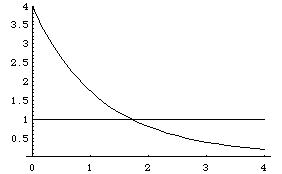

| To show the Moran equation |
| 1 = r1d + ... + rNd. |
| has a unique solution, assuming |
| f(d) = r1d + ... + rNd. |
| First, note |
| f(0) = r10 + ... + rN0 = 1 + ... + 1 = N. |
| Second, note |
| f(d) → 0 as d → ∞. |
| This is because each ri satisfies |
| each rid → 0 as d → ∞. |
| Third, the graph of f(d) is strictly decreasing. |
| To see this, observe the derivative is |
| f '(d) = r1dln(r1) + ... + rNdln(rN) |
| Because 0 < ri < 1, each ln(ri) < 0, so f '(d) < 0. |
| For example, here is the graph of f(d) vs d for N = 4, r1 = r2 = r3 = 1/2, and r4 = 1/4. |
|  |
| Note that the graph of y = f(d) crosses the horizontal line y =1 at |
| d = 1.72368... . |
| We'll see how to find this value in the next section solving the Moran equation. |
| This is the similarity dimension of a fractal with these scalings. |
Return to the Moran equation.